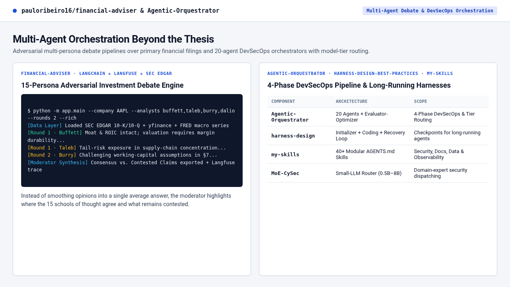

🔍 ZoomAgentic-Orquestrator, Harnesses & my-skills
3 Public3 Públicos
Purpose: Coordinate 20 specialized DevSecOps agents, 40+ skill modules, model-tier routing, and checkpoint recovery harnesses for long-running agents.
Propósito: Orquestrar 20 agentes DevSecOps, 40+ módulos de skills, model-tier routing e harnesses de checkpoint/recuperação para agentes de longa duração.